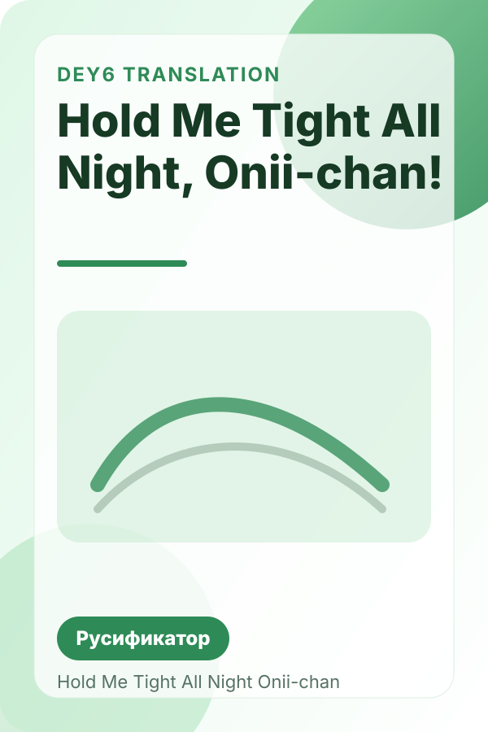
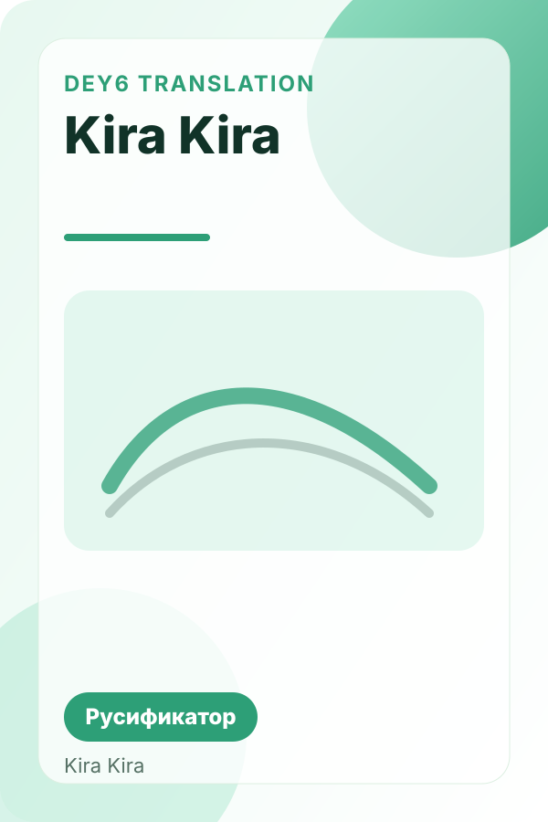
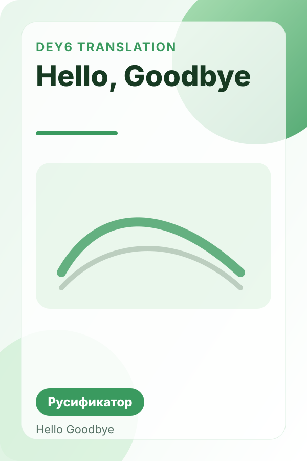
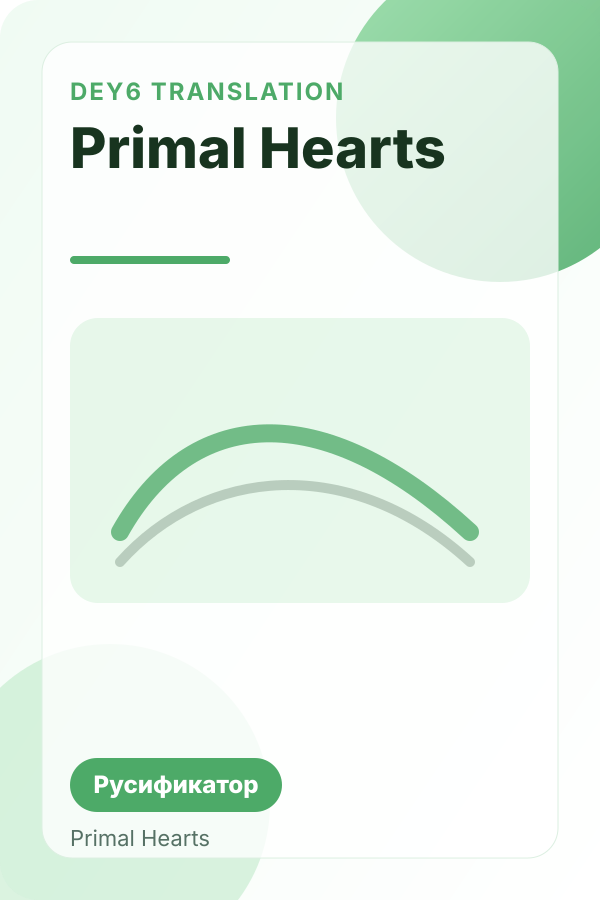
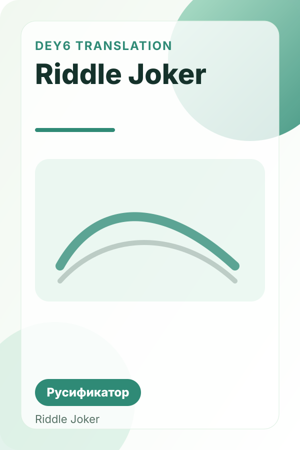
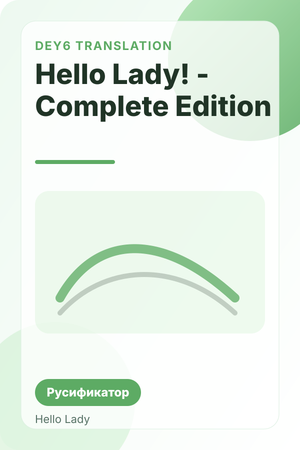

Обычно установка русификатора на визуальную новеллу выглядит одинаково: скачиваешь архив, открываешь папку игры, переносишь файлы перевода и соглашаешься на замену. Но у разных проектов могут быть нюансы, поэтому ниже мы собрали универсальную инструкцию.
- Скачай архив перевода со страницы нужной игры.
- Закрой игру, если она была запущена.
- Открой корневую папку игры.
- Перенеси туда файлы из архива русификатора.
- Подтверди замену файлов и запусти игру заново.
Если после установки перевод не появился, проверь, подходит ли версия игры под текущий патч, и посмотри оригинальный пост на Boosty — там могут быть фиксы или обновления.
Популярные переводы из каталога

Hold Me Tight All Night, Onii-chan!
Русификатор Hold Me Tight All Night, Onii-chan! на русский язык. Переведено около 25–30 тысяч строк.

Kira Kira
Русификатор Kira Kira на русский язык от Dey6. Переведено около 30 тысяч строк.

Hello, Goodbye
Русификатор Hello, Goodbye на русский язык. Переведено около 30 тысяч строк и почти полностью локализовано меню.

Primal Hearts
Русификатор Primal Hearts на русский язык. Переведено примерно 40–45 тысяч строк.

Riddle Joker
Русификатор Riddle Joker от Dey6. Переведено около 55 тысяч строк; на странице есть загрузка и инструкция.

Hello Lady! - Complete Edition
Русификатор Hello Lady! Complete Edition на русский язык, включая DLC. Переведено около 40 тысяч строк.